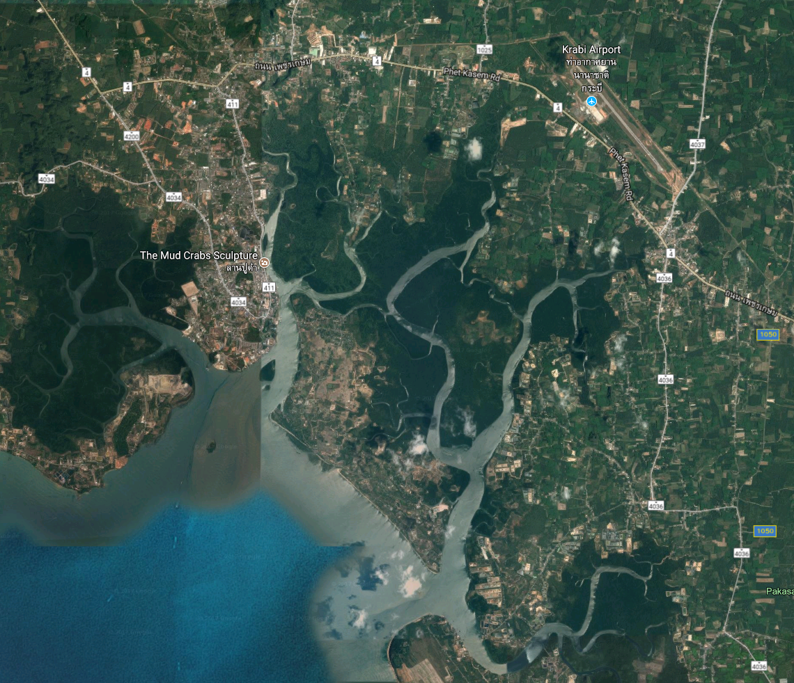
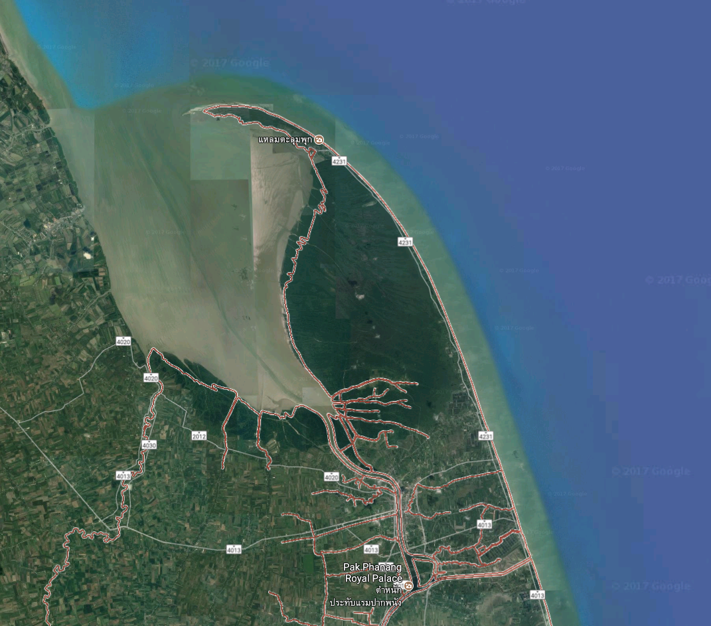

2.3 Project 3
Working title: Variation in forest structure, species and carbon stocks at two equi-latitude deltaic mangroves
Overview: This chapter will focus on elucidating the differences within two “deltaic” forests in terms of carbon stocks, forest structure, and species diversity. I am sitting on datasets from my time at Yale for two sites on the west and east coasts of peninsular Thailand, that are at relatively equal latitudes. The sites, however, are markedly different in their formation and may have significant differences in terms of topography, morphology, etc. that would make for a nice case study. Preliminary analysis shows that at one site (Krabi) the SOC is exteremely heterogeneous over space, whereas at the other (Pak Panang) SOC is markedly homogeneous. This is likely due to Krabi Potentially collect data on soil texture to couple with dataset and couple with soil organic carbon.
Krabi Estuary, Krabi (Andaman Coast)
- marked by three major fluvial inputs as well as numerous distributaries and intertidal basins

Pak Panang, Nakorn Si Thammarat (Gulf of Thailand)
- deltaic formation from single active tributary
- deposited sediments are reworked by wave action perpendicular to coast to form a chenier upon which a mudflat has formed over time
- likely agricultural sediments given upland land use

Target journal: TBD
Coauthors: TBD
Research questions:
- How do species composition, forest structure and carbon stocks (AG & BG) vary between equilatitude forests of differing geomorphic position?
- How much carbon exists within the Krabi River Estuary and Pak Panang mangrove forests (simple C quantification)?
Notes:
- write-up of data from Yale
- look at hydrological models in landscape to support geomorphology characterization (landscape level)